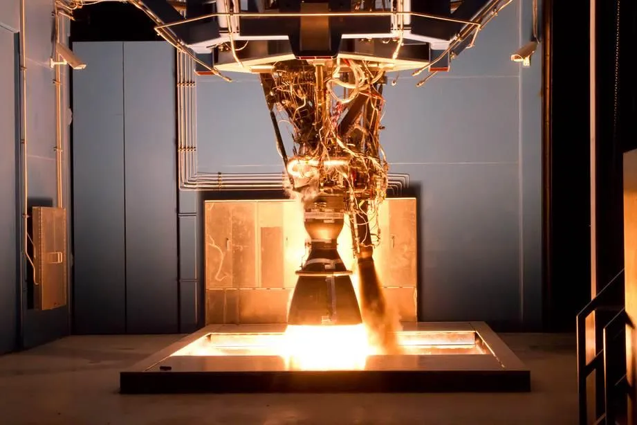

▲ 2017년 공개된 로드스터 프로토타입. 10월 1일 공개될 양산형은 후면부가 완전히 재설계됐다고 알려졌다 ⓒ Wikimedia Commons
"고 포 런치(Go for launch)" — 로켓 발사 관제센터에서나 쓸 법한 문구가 자동차 공개 행사 티저에 등장했다.
테슬라가 자체 SNS를 통해 10월 1일 텍사스 웨이코에서 차세대 로드스터를 공개한다고 예고했다. 일론 머스크가 직접 X(옛 트위터)에 티저 링크를 올리며 "이번 공개는 지구 밖 일처럼 대단할 것(out of this world)"이라고 밝혔지만, 로드스터를 둘러싼 오랜 지연의 역사를 아는 이들이라면 곧바로 반가워하기는 쉽지 않다. 공개(reveal)와 실제 양산(production)은 다른 이야기이기 때문이다.
1. 10월 1일, 무슨 일이 열리나
행사는 텍사스 웨이코에서 현지시각 10월 1일 밤 8시 30분에 열린다. 웨이코는 스페이스X의 로켓엔진 시험시설인 맥그리거(McGregor) 시험장이 있는 도시로, 이번 행사 장소로 우연히 선택된 것은 아니라는 분석이 나온다.
초대장은 로드스터 예약금을 낸 고객에게만 한정 발송되며 양도가 불가능한 것으로 알려졌다. 참석 신청(RSVP) 마감은 9월 16일이었다. 일반 공개 행사라기보다는 오래 기다려온 예약 고객들을 향한 '증인 소환'에 가까운 형식이다.

▲ 2017년 로드스터 프로토타입 측면. 당시 목표였던 0-60mph 1.9초는 이후 다른 제조사가 이미 넘어선 기록이 됐다 ⓒ Wikimedia Commons
2. 스페이스X 스러스터, 정말 '나는' 자동차인가
이번 티저의 핵심은 후면에서 뿜어져 나오는 네 개의 스러스터 이미지다. 스러스터가 아래가 아닌 뒤쪽을 향해 있다는 점에서, "로드스터가 실제로 하늘을 난다"는 의미보다는 순간 가속을 돕는 냉가스(cold-gas) 추진 보조 장치에 가깝다는 게 중론이다.

▲ 스페이스X 맥그리거(McGregor) 시험장의 로켓엔진 연소 시험 모습. 로드스터 공개 행사가 열리는 텍사스 웨이코가 바로 이 시험장 인근이다 ⓒ SpaceX, Wikimedia Commons (CC0)
📍 압축가스로 미는 0-60mph 1.1초
테슬라 설명에 따르면 스페이스X 패키지를 장착하면 압축가스 스러스터가 차체에 내장된 형태로 작동하며, 0-60mph 가속을 1.1초 이내로 끌어내린다. 스러스터 없는 기본형 목표는 1.9초다. 다만 이런 장치가 공공도로에서 합법적으로 사용 가능한지는 아직 규제상 명확히 정리되지 않은 상태로 전해진다.
| 사양 | 0-60mph 목표 | 비고 |
|---|---|---|
| 기본형 | 1.9초 | 2017년 최초 공개 당시 발표 수치와 동일 |
| 스페이스X 패키지 장착 | 1.1초 이내 | 냉가스 스러스터 보조 가속 |
| 참고: 리막 네베라 R | 1.72초(0-100km/h) | 2025년 7월 기준, 이미 양산차로 기록 경신 |
공교롭게도 크로아티아의 전기 하이퍼카 리막 네베라 R은 2025년 7월 0-100km/h를 1.72초에 주파하며 테슬라가 2017년 내세웠던 1.9초 기록을 이미 넘어섰다. 그런데도 테슬라의 로드스터 예약 페이지에는 여전히 옛 수치가 게시돼 있어, "이제는 테슬라가 기준을 세우기보다 남이 세운 기준을 뒤쫓는 모양새"라는 지적도 나온다.
3. 왜 다들 '이번엔 진짜?'라고 되묻나
로드스터는 2017년 프로토타입으로 처음 공개된 이후, 거의 10년째 양산에 이르지 못하고 있다. 애초 2020년 생산 시작을 약속했지만 실현되지 않았고, 이후로도 매번 새로운 일정이 발표됐다가 지켜지지 않는 패턴이 반복돼왔다.
| 순번 | 예고 시점 |
|---|---|
| 1차 | 4월 1일 |
| 2차 | 4월 말 |
| 3차 | "한 달 정도 후"(구체 일정 미제시) |
| 4차 | 8월 |
| 5차(현재) | 10월 1일 |
즉 이번 10월 1일 예고는 2026년 한 해에만 벌써 다섯 번째로 등장한 날짜다. 앞선 네 차례 모두 실제 행사로 이어지지 않았다는 점에서, 이번에도 신중하게 지켜봐야 한다는 시선이 지배적이다.
✅ '공개'와 '양산'은 다르다
· 10월 1일 행사는 디자인·기능을 보여주는 '공개(reveal)' 행사이지, 양산 개시나 고객 인도 시작이 아님
· 머스크와 테슬라 경영진이 최근 언급한 실제 양산 목표 시점은 2027년 또는 2028년으로, 텍사스 기가팩토리 생산이 거론됨
· 과거 사례를 볼 때 공개 이후로도 추가 지연 가능성을 배제할 수 없음
4. 관전 포인트
로드스터는 테슬라 최초의 양산차이자, 회사를 지금의 자리로 이끈 상징적 모델이다. 그만큼 후속작에 대한 기대와 회의가 공존해왔다. 이번 10월 1일 행사가 실제 어떤 모습으로 진행될지, 그리고 이번에는 발표된 일정이 지켜질지가 관전 포인트다.
테슬라의 공식 티저와 행사 관련 소식은 아래에서 확인할 수 있다. Motor1 원문 바로가기

▲ 테슬라 수석 디자이너 프란츠 폰 홀츠하우젠(왼쪽)과 일론 머스크. 두 사람은 앞서 로드스터가 "매우 곧" 나온다고 여러 차례 밝힌 바 있다 ⓒ Wikimedia Commons

▲ 테슬라 기가팩토리 텍사스. 머스크와 경영진은 로드스터의 실제 양산 목표를 2027~2028년, 텍사스 생산으로 언급한 바 있다 ⓒ 테슬라
5. 요약
테슬라가 10월 1일 텍사스 웨이코에서 차세대 로드스터를 공개한다고 예고했다. 스페이스X와 공동 개발한 냉가스 스러스터 옵션을 장착하면 0-60mph 가속을 1.1초 이내로 끌어내린다는 설명이며, 가격은 기본형 20만 달러, 파운더 시리즈 25만 달러로 알려졌다.
다만 이번 예고는 2026년 한 해에만 벌써 다섯 번째로 등장한 날짜다. 2017년 최초 공개 이후 거의 10년째 양산이 미뤄져온 로드스터의 이력을 감안하면, '공개'와 '실제 양산'을 구분해서 볼 필요가 있다.
머스크와 경영진이 언급한 실제 양산 목표는 2027~2028년, 텍사스 기가팩토리 생산이 거론되는 상태다. 이번 행사가 예약 고객들의 오랜 기다림에 어떤 답을 내놓을지 주목된다.